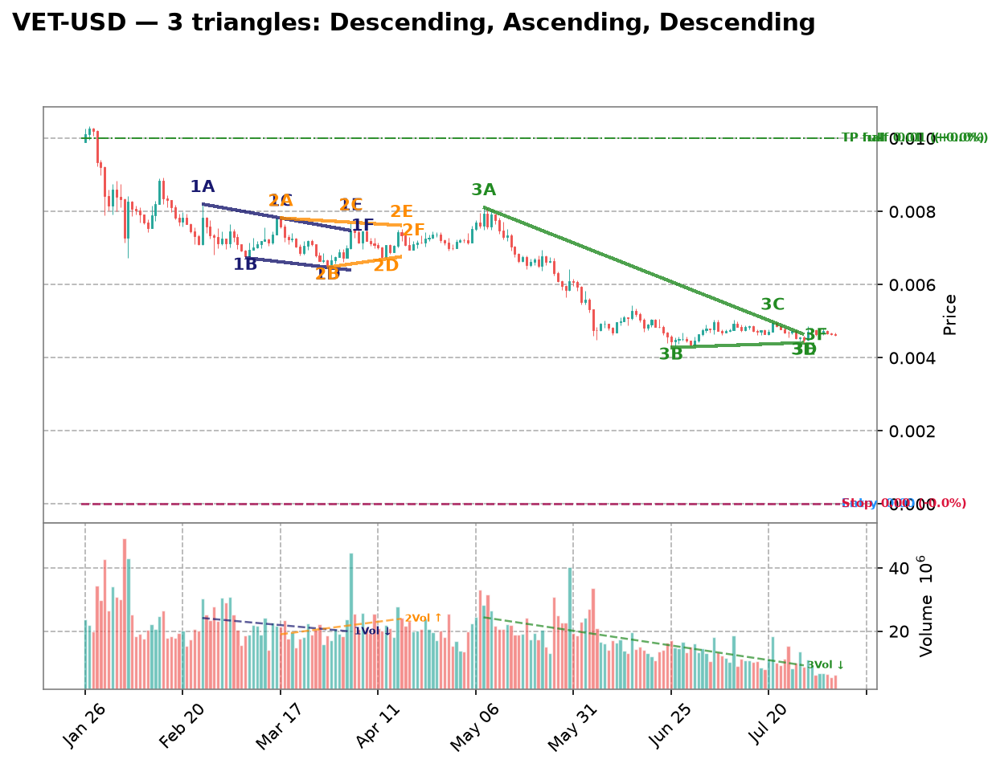
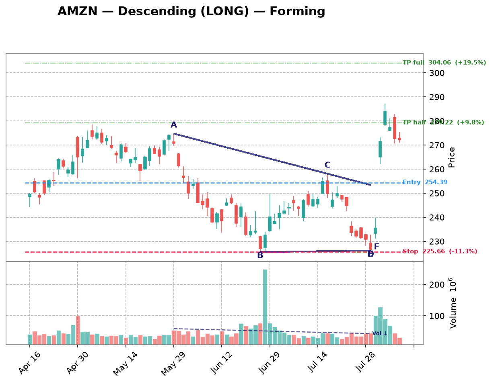
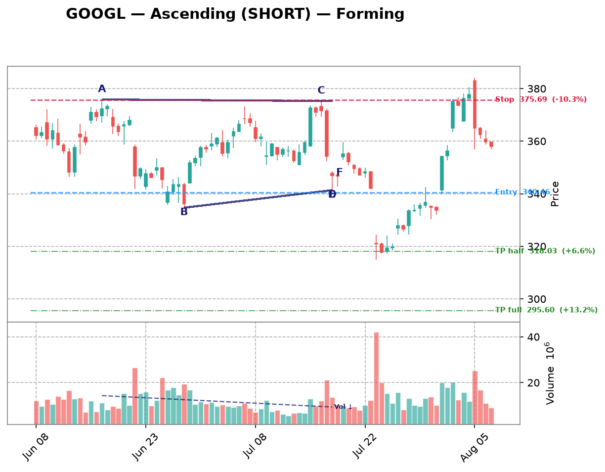
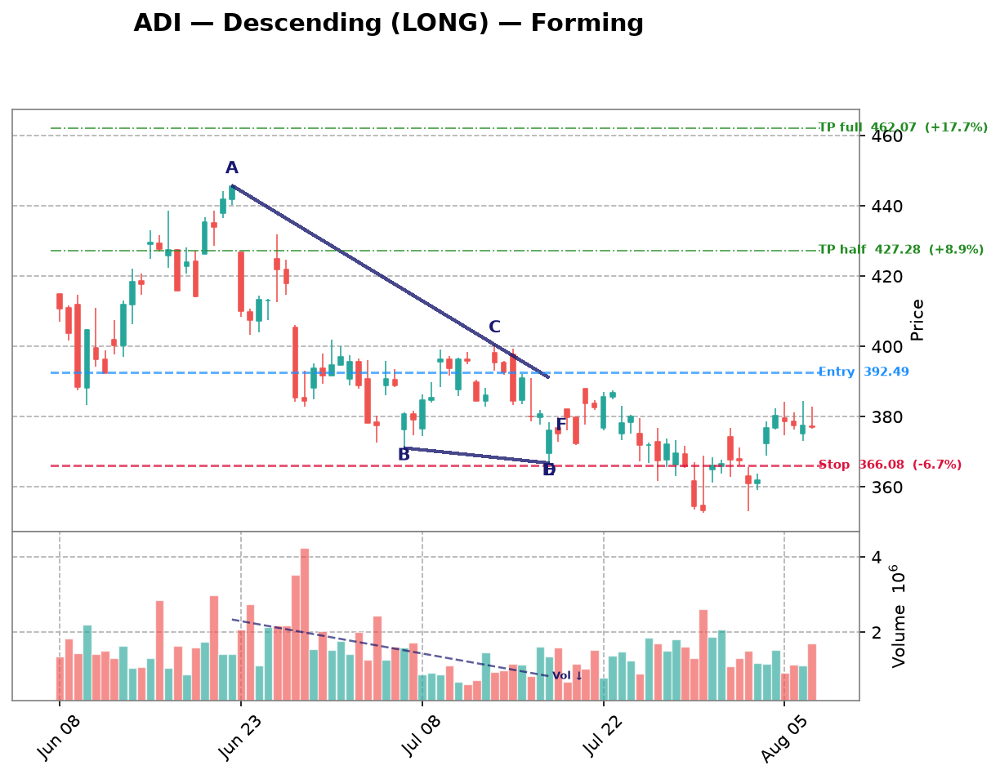
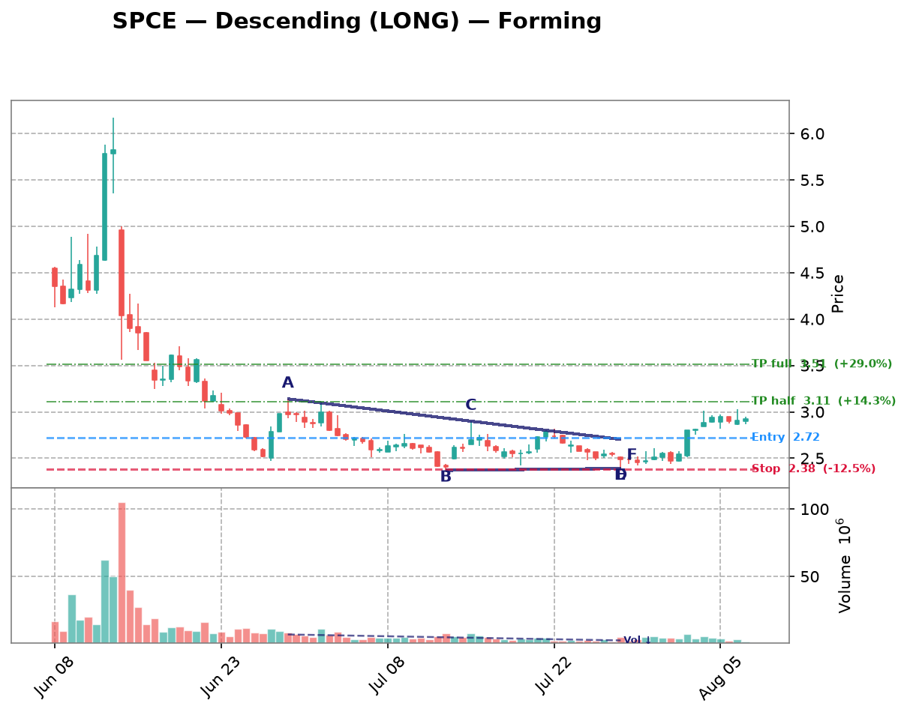
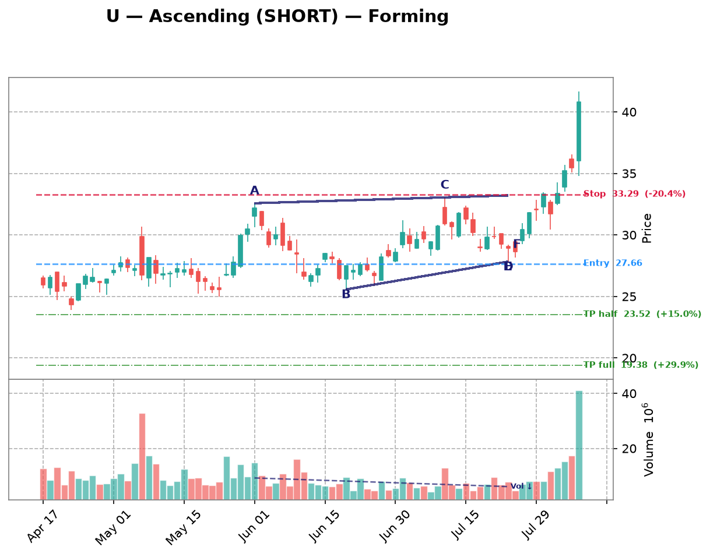

| Date | Symbol | TF | Pattern | Dir | Verdict | Claude Pattern | Claude Dir | Conf | Rec |
|---|---|---|---|---|---|---|---|---|---|
| crypto 10 patterns | |||||||||
| 2026-08-14 | DOGE-USD | 1d | Descending | LONG | Disputed | ? | ? | Certainty: 78 | — |
Chart  Claude Notes The right edge (Jul-Aug) shows a tight, flat consolidation around 0.069-0.075 with very low volatility and volume, but there's no clear converging structure - both highs and lows have been roughly flat/horizontal for weeks rather than forming a descending upper trendline with a flat base. This looks more like a low-volatility range/basing pattern after a prolonged downtrend from May, not an active descending triangle. A descending triangle needs distinctly lower highs converging into a flat support; here the highs are also flat, not declining. Insufficient evidence of two distinct converging trendlines with 2+ touches each showing clear compression toward an apex. Presence certainty 78/100 — how sure Claude is that its found/not-found call is correct | |||||||||
| 2026-08-14 | XRP-USD | 1d | Descending | LONG | Disputed | ? | ? | Certainty: 78 | — |
Chart  Claude Notes The right side of the chart (Jun-Aug) shows price consolidating in a fairly narrow, flat range between roughly 1.05 and 1.20, but there's no clear convergence structure - highs and lows are both roughly flat/choppy rather than one line converging toward another. This looks more like a flat/rectangular consolidation or ranging market at support after a strong downtrend, not a descending triangle with lower highs squeezing against a flat support. I don't see a clear series of lower highs forming a descending resistance line - the recent candles (Jul-Aug) look more like sideways chop within a horizontal band. Insufficient evidence of a converging apex to confidently call this a triangle. Presence certainty 78/100 — how sure Claude is that its found/not-found call is correct | |||||||||
| 2026-08-14 | VET-USD | 1d | Descending | LONG | Disputed | ? | ? | Certainty: 75 | — |
Chart  Claude Notes The right side of the chart (late June through late July) shows price consolidating in a tight, roughly flat range between ~0.0043 and ~0.0050, with no clear converging trendlines. Both the highs and lows are essentially flat/sideways, not showing a descending upper resistance line as required for a descending triangle. This looks more like a flat rectangular consolidation/range-bound base after a sharp downtrend, rather than a triangle with converging boundaries. There's no clear apex forming or narrowing range - candles are just chopping sideways in a tight band. I disagree with the algorithm's descending triangle flag since the upper boundary isn't declining, it's flat, and the pattern lacks the progressive compression characteristic of a triangle. Presence certainty 75/100 — how sure Claude is that its found/not-found call is correct | |||||||||
| 2026-08-14 | ETH-USD | 1d | Symmetric | SYMMETRIC | Disputed | ? | ? | Certainty: 68 | — |
Chart  Claude Notes The right edge of the chart (mid-June through late July) shows a sharp V-shaped recovery from ~1560 up to ~1950, followed by a fairly flat, tight consolidation around 1830-1950 with low volume. This is more of a rectangular/range-bound consolidation than a converging triangle - the highs and lows over the last ~25 candles are roughly parallel (flat top near 1950, flat bottom near 1830) rather than converging toward an apex. There isn't a clear pattern of higher lows meeting lower highs; instead price is oscillating in a narrow horizontal band. I don't see the two trendlines pinching together as required for a symmetric triangle - it looks more like a flag/consolidation after the sharp rally off the lows. Presence certainty 68/100 — how sure Claude is that its found/not-found call is correct | |||||||||
| 2026-08-14 | SOL-USD | 1d | Symmetric | SYMMETRIC | Both agree | Symmetric | SYMMETRIC | Quality: 45 | monitor |
Chart  Claude Notes From late June's peak (~83) price has been oscillating with lower highs (~79 on Jul8, ~78 on Jul18, ~77 on Jul24) and roughly higher/flattening lows (~72 on Jul10, ~71 on Jul20, ~72 on Jul28), producing a loose converging range. The last week of candles (~73-74) is notably tighter than earlier swings, suggesting some compression near the right edge, consistent with an apex forming. However, the touches are not crisp — the 'trendlines' have some noise and the lower boundary is more flat than clearly rising, so this leans toward a weak/messy symmetric triangle rather than a textbook one. Price is currently still inside the range, no clear breakout yet, so the algorithm's flag is plausible but should be treated with caution given the loose structure. Symbol Research SOL-USD is Solana, a high-throughput layer-1 blockchain known for low fees and fast finality, widely used for DeFi, NFTs, and memecoin activity. It remains one of the top smart-contract platforms by market cap and developer activity, with recent narrative support from ETF speculation and network upgrade progress, though it has historically shown high beta/volatility relative to BTC. Market Sentiment neutral Presence certainty 55/100 — how sure Claude is that its found/not-found call is correct Pattern quality 45/100 — how clean/tradable this specific triangle is Research confidence 55/100 — Phase B research conviction Supporting Signals
Opposing Signals
| |||||||||
| 2026-08-14 | MANA-USD | 4h | Ascending | SHORT | Disputed | ? | ? | Certainty: 78 | — |
Chart  Claude Notes The right side of the chart (late July into early August) shows a fairly flat, choppy consolidation around 0.066-0.069 with no clear converging trendlines. Highs are roughly flat (~0.0685-0.069) and lows are also roughly flat (~0.0655-0.066), which looks more like a horizontal rectangle/range than an ascending triangle. There's no evidence of rising higher-lows compressing toward a flat top - lows are not clearly ascending, they are choppy and similar in level. The broader chart shows a prior downtrend from mid-July highs (~0.075) into this current range, but the recent price action lacks the progressive narrowing (convergence) needed for a valid triangle. I disagree with the algorithm's ascending triangle call since the lower boundary isn't clearly rising with multiple higher-low touches - it looks more like sideways consolidation/range-bound trading. Presence certainty 78/100 — how sure Claude is that its found/not-found call is correct | |||||||||
| 2026-08-14 | SAND-USD | 4h | Descending | LONG | Disputed | ? | ? | Certainty: 78 | — |
Chart  Claude Notes The chart shows a clear downtrend from early July through late July (0.051 to 0.041), followed by a period of choppy, range-bound consolidation from roughly Jul 28 to Aug 06 between ~0.041 and ~0.044. This recent price action is more of a flat, sideways channel/range with roughly equal highs (~0.0435-0.044) and roughly equal lows (~0.0405-0.041) rather than a converging triangle with a clearly descending upper trendline. The highs are not making consistently lower peaks - they bounce around a similar ceiling. There's no visible narrowing/compression toward an apex; the range width stays fairly constant over the last 15-20 candles. This looks more like a rectangle/consolidation base than a descending triangle. I disagree with the algorithm's flag - the upper boundary isn't clearly declining, it's closer to flat with noisy touches, and the lower boundary is also flat rather than rising, which would argue against even an ascending triangle. Overall this is a sideways consolidation after a downtrend, not a well-defined descending triangle. Presence certainty 78/100 — how sure Claude is that its found/not-found call is correct | |||||||||
| 2026-08-14 | XLM-USD | 3h | Descending | LONG | Disputed | ? | ? | Certainty: 85 | — |
Chart  Claude Notes The right side of the chart shows a clear, sustained downtrend from ~0.19 down to ~0.16 with lower highs and lower lows in a fairly steady descending channel, not a converging triangle. There's no flat or rising support line - support keeps stepping down along with resistance, indicating a downtrend/channel rather than compression. No credible ascending triangle structure is visible; price has not been consolidating into a narrowing range near the right edge, it's simply trending down. I disagree with the algorithm's ascending triangle flag - there's no rising lower trendline with a flat top; both boundaries are declining together. Presence certainty 85/100 — how sure Claude is that its found/not-found call is correct | |||||||||
| 2026-08-14 | ETC-USD | 3h | Descending | LONG | Disputed | ? | ? | Certainty: 82 | — |
Chart  Claude Notes The chart shows a clear, sustained downtrend from ~7.2 (Jul 9-15) down to ~6.4-6.5 (Aug 3+) with lower highs and lower lows throughout - this is a persistent downtrend, not a converging triangle. Near the right edge, price is consolidating in a tight range (~6.4-6.6) but there's no clear rising support line - lows are relatively flat/choppy (6.35-6.45) rather than forming higher lows, and highs are also fairly flat (~6.6-6.65) rather than descending sharply. This looks more like a flag/consolidation after a downtrend rather than a descending triangle with a falling resistance line. The algorithm's 'LONG' direction call is also inconsistent with a descending triangle, which is typically a bearish continuation pattern (would imply SHORT), suggesting the auto-flag is unreliable here. Insufficient distinct touch points on a clearly falling upper trendline to confirm a descending triangle. Presence certainty 82/100 — how sure Claude is that its found/not-found call is correct | |||||||||
| 2026-08-14 | VET-USD | 3h | Ascending | SHORT | Disputed | ? | ? | Certainty: 78 | — |
Chart  Claude Notes The right side of the chart shows a choppy sideways range between ~0.00463 and ~0.00475, with no clear convergence. Highs are relatively flat (0.0048, 0.00477, 0.00467, 0.00465) rather than descending, and lows are also flat/oscillating rather than rising in a clean stepwise fashion - there's no consistent higher-low structure. This looks more like range-bound consolidation/noise than a converging triangle. The algorithm's ascending triangle call doesn't hold up since the 'support' line isn't clearly rising with distinct touch points - price is just bouncing within a broad horizontal channel. No credible triangle apex or breakout setup is visible near the right edge. Presence certainty 78/100 — how sure Claude is that its found/not-found call is correct | |||||||||
| crypto-equity 5 patterns | |||||||||
| 2026-08-14 | MSTR | 3h | Descending | LONG | Disputed | ? | ? | Certainty: 70 | — |
Chart  Claude Notes Price action from mid-July through early August is largely range-bound / choppy sideways consolidation between roughly 90-103, without a clear converging structure. Highs and lows do not show a consistent narrowing pattern - there are multiple swings hitting both ~100 resistance and ~92-95 support repeatedly without tightening. This looks more like a horizontal trading range or noise than a descending triangle, which would require a clearly declining upper trendline (lower highs) against a flat support. The recent highs (~99-100) are not meaningfully lower than earlier highs (~99-101), so the 'descending' resistance line is questionable. I don't see strong evidence of apex compression near the right edge. Presence certainty 70/100 — how sure Claude is that its found/not-found call is correct | |||||||||
| 2026-08-09 | MSTR | 1h | Ascending | SHORT | Disputed | ? | ? | Certainty: 78 | — |
Chart  Claude Notes The right-side price action (late Aug 5 into Aug 6) shows a decline from ~99 to ~96.5 with lower highs and lower lows together — this looks like a mild downtrend/pullback rather than a converging triangle with a rising support line. There's no clear rising trendline of higher lows; instead both highs and lows are declining in tandem, more consistent with a small descending channel or simple retracement than an ascending triangle. No flat resistance line is visible either (highs are dropping from ~99 to ~97.5 to ~97). I don't see the two clearly converging trendlines required for a valid triangle at the right edge, so I disagree with the algorithm's ascending triangle / short flag. Presence certainty 78/100 — how sure Claude is that its found/not-found call is correct | |||||||||
| 2026-08-09 | CIFR | 1h | Descending | LONG | Disputed | ? | ? | Certainty: 78 | — |
Chart  Claude Notes The chart shows a series of large swing oscillations (roughly 26->18->24->17->26->18->25->18) rather than a converging structure. Each swing has similar amplitude, indicating a broad trading range/downtrend with volatility rather than a narrowing triangle. Near the right edge, price is declining from ~25 to ~18-19 with no flattening support line or clear lower highs converging into an apex - the recent candles show a steady downward slide, not compression. There is no consistent horizontal support with descending highs; the swings are too wide and repetitive to qualify as a descending triangle. I disagree with the algorithm's flag - this looks like continued range-bound/down-trending price action, not a triangle nearing apex. Presence certainty 78/100 — how sure Claude is that its found/not-found call is correct | |||||||||
| 2026-08-09 | MARA | 1h | Descending | LONG | Disputed | ? | ? | Certainty: 78 | — |
Chart  Claude Notes {
"found_triangle": false,
"pattern_type": null,
"direction": null,
"presence_confidence": 78,
"pattern_quality": null,
"notes": "The chart shows an overall downtrend with successive lower highs (15, 14, 13, 12.7, 12) and lower lows (12, 11.8, 10.7, 10, 10.7), forming a descending staircase rather than a converging triangle. There's no flat/horizontal support line - the lows are also declining, not holding at a consistent level. At the right edge, price is consolidating in a tight range around 10.7-12 but without clear evidence of a rising lower boundary or flat lower support meeting a descending upper trendline with 3+ touches each. This looks more like a broader downtrend with intermittent consolidation than a well-defined descending triangle. The algorithm's flag is plausible given the recent narrowing range, but the lower boundary isn't flat - it's still sloping down, making this more consistent with a bearish channel/flag than a classic descending triangle setup for a LONG bias, which would typically need a firm horizontal support.",
} Presence certainty 78/100 — how sure Claude is that its found/not-found call is correct | |||||||||
| 2026-08-09 | IREN | 1h | Symmetric | SYMMETRIC | Disputed | ? | ? | Certainty: 72 | — |
Chart  Claude Notes The chart shows a broad downtrend from late June (~57) into a choppy bottoming/ranging structure from mid-July through early August, oscillating between roughly 30 and 44 with multiple swing highs and lows of similar magnitude - more like a wide horizontal range than a converging wedge. Near the right edge (early August), price is bouncing between ~37-41 without clear narrowing of highs and lows; recent candles show similar range width to prior weeks rather than compression toward an apex. I don't see two clearly converging trendlines with consistent touch points - the swing highs (44, 43, 41) and lows (33, 30, 36) don't form a tight symmetric convergence, they look more like a rounded/ranging base. I disagree with the algorithmic flag; this looks more like consolidation/basing after a downtrend rather than a well-defined symmetric triangle. Presence certainty 72/100 — how sure Claude is that its found/not-found call is correct | |||||||||
| mega-cap 4 patterns | |||||||||
| 2026-08-14 | AMZN | 1d | Descending | LONG | Disputed | ? | ? | Certainty: 80 | — |
Chart  Claude Notes The right side of the chart shows a sharp rally from ~230 to ~286 followed by a pullback to ~272-282, not a converging consolidation. There's no clear flat support with lower highs compressing into an apex - instead this looks like a strong impulsive move up followed by a small retracement/consolidation of only 3-4 candles, too few touch points to confirm a descending triangle. The broader mid-chart pattern (Jun) shows a rounded bottom, not a triangle either. I disagree with the algorithm's descending triangle flag - there's no established flat support line with repeated tests, and the recent price action is dominated by a breakout rally rather than a contained compression pattern. Presence certainty 80/100 — how sure Claude is that its found/not-found call is correct | |||||||||
| 2026-08-14 | NVDA | 1d | Descending | LONG | Disputed | ? | ? | Certainty: 78 | — |
Chart  Claude Notes The chart shows a broad swing from ~200 up to ~235, back down to ~190, and now a sharp recovery to ~220 at the right edge. There's no clear convergence of upper and lower trendlines - the recent price action from late July into early August is a strong impulsive rally (three consecutive green candles from ~190 to ~223) rather than a compression pattern. There's no flat support line with lower highs converging into it - instead we see a V-shaped bottom followed by a breakout rally. The algorithm's descending triangle call doesn't fit: there's no series of lower highs testing a declining resistance line while support holds flat; instead price simply declined then sharply reversed. This looks like a breakout/reversal move already underway, not a triangle still building toward an apex near the right edge. Presence certainty 78/100 — how sure Claude is that its found/not-found call is correct | |||||||||
| 2026-08-14 | META | 1d | Descending | LONG | Disputed | ? | ? | Certainty: 72 | — |
Chart  Claude Notes The right edge shows a sharp decline from ~685 down to ~525 in late July, followed by a choppy sideways bounce between roughly 580-600 with no clear rising support or flat resistance forming multiple clean touches. This looks more like consolidation after a sharp drop rather than a descending triangle - there isn't a clear flat support line with 2-3 touches, nor a clearly defined descending upper trendline with lower highs converging toward it. The recent candles (last ~10) are fairly flat/choppy in a narrow range (~580-605) but lack the geometric convergence structure of a true triangle. I don't see the algorithm's descending triangle setup credibly - there's no well-defined flat bottom being tested multiple times with clear lower highs pressing down on it. Presence certainty 72/100 — how sure Claude is that its found/not-found call is correct | |||||||||
| 2026-08-14 | GOOGL | 4h | Ascending | SHORT | Disputed | ? | ? | Certainty: 82 | — |
Chart  Claude Notes The right side of the chart shows a strong uptrend from ~320 to a peak near 382, followed by a sharp pullback to ~358-365 over the last few candles. This is not a converging triangle - there's no clear flat or rising support line with a flat/falling resistance line forming a compression. Instead, price made a strong impulsive rally and is now retracing sharply, which looks more like a blow-off top / reversal than a triangle consolidation. There are only 1-2 candles at the recent high before the sharp drop, not enough touches on an upper trendline to establish resistance, and no established rising support line with multiple higher lows. The algorithm's 'ascending triangle' flag appears to be a false positive driven by the rising price action prior to the pullback, rather than genuine horizontal resistance with rising support. Presence certainty 82/100 — how sure Claude is that its found/not-found call is correct | |||||||||
| semiconductors 3 patterns | |||||||||
| 2026-08-14 | ADI | 4h | Descending | LONG | Disputed | ? | ? | Certainty: 65 | — |
Chart  Claude Notes The chart shows a strong downtrend from late June (~440) into early Aug (~355), followed by a modest bounce/basing near 360-385 in the last ~2 weeks. There's no clear flat support with lower highs converging - the recent price action shows a slight higher-low structure (355->360->365) with relatively flat highs around 380-385, which is more consistent with a shallow ascending base/consolidation than a descending triangle. The algorithm's descending triangle call doesn't fit well since the lower boundary isn't flat - lows are actually rising slightly, and highs are also fairly flat rather than declining. Overall this looks like a basing/consolidation range after a downtrend rather than a clean descending triangle with distinct lower-high resistance line and flat support with 3+ touches each. Not enough clear convergence to call this a credible triangle pattern. Presence certainty 65/100 — how sure Claude is that its found/not-found call is correct | |||||||||
| 2026-08-09 | LRCX | 1h | Ascending | SHORT | Disputed | ? | ? | Certainty: 72 | — |
Chart  Claude Notes The right-side price action (early Aug) shows a choppy range between roughly 305-320, but there's no clear ascending support line—lows are flat/noisy (around 305-308) rather than making distinct higher lows, and the highs are also roughly flat (~315-320) rather than converging. This looks more like a horizontal consolidation/rectangle than a true ascending triangle. The algorithm likely flagged minor higher-low bumps, but there aren't 2-3 clean touch points forming a rising trendline distinct from a flat one. Prior to this, price action from mid-July was a clear downtrend with lower highs/lower lows, not a triangle. Given the ambiguity of the recent consolidation, I lean toward rejecting the triangle call, though a loose case for a shallow ascending structure isn't impossible. Presence certainty 72/100 — how sure Claude is that its found/not-found call is correct | |||||||||
| 2026-08-09 | AMAT | 1h | Symmetric | SYMMETRIC | Disputed | ? | ? | Certainty: 72 | — |
Chart  Claude Notes The right side of the chart shows a rally from ~500 to ~555 followed by a pullback to ~530, but this looks like a rounded top / pullback within a broader swing rather than a converging triangle. There's no clear sequence of lower highs meeting higher lows - the recent candles (Aug 03-08) show a peak around 555 then a fairly sharp drop to 530, which is more consistent with a short-term downtrend or consolidation than a symmetric wedge. I don't see at least two clean, roughly parallel converging trendlines with multiple touches on each side near the apex. The algorithm may be reacting to the general narrowing of range after the spike, but the touch points are too few and inconsistent to confirm a genuine symmetric triangle. Presence certainty 72/100 — how sure Claude is that its found/not-found call is correct | |||||||||
| forex 2 patterns | |||||||||
| 2026-08-09 | EURUSD=X | 1h | Ascending | SHORT | Disputed | ? | ? | Certainty: 82 | — |
Chart  Claude Notes The right side of the chart shows a clear downtrend from the Aug 5 peak (~1.156) into Aug 6, with lower highs and lower lows in a fairly consistent decline, followed by a flattening/consolidation near 1.1525-1.153. There's no clear rising support line with higher lows to form an ascending triangle - instead price dropped sharply and is now consolidating in a narrow range without a defined converging structure. The algorithm's ascending triangle call doesn't fit since there's no series of higher lows visible; the recent price action looks more like a sharp decline stabilizing at a new lower level rather than a triangle compression. Not enough touch points on both an upper and lower trendline to confirm any triangle pattern near the apex on the right edge. Presence certainty 82/100 — how sure Claude is that its found/not-found call is correct | |||||||||
| 2026-08-09 | NZDUSD=X | 1h | Ascending | SHORT | Disputed | ? | ? | Certainty: 78 | — |
Chart  Claude Notes The right side of the chart shows price consolidating in a choppy range between ~0.5865 and ~0.590 after a strong impulsive rally from late July. However, this looks more like a flat/rectangular consolidation than an ascending triangle - the highs are roughly flat (~0.590) but the lows are also fairly flat/choppy (~0.5865-0.587), not showing a clear rising sequence of higher lows. There's no clean converging trendline structure - both boundaries appear roughly horizontal rather than one flat and one rising. This resembles sideways consolidation or a minor pullback/flag after the breakout rather than a textbook ascending triangle with rising support. The algorithm's flag seems to be picking up on the tightening range but the specific 'rising lower trendline' criterion for ascending triangle isn't clearly satisfied here. Presence certainty 78/100 — how sure Claude is that its found/not-found call is correct | |||||||||
| hardware 2 patterns | |||||||||
| 2026-08-14 | DELL | 1d | Ascending | SHORT | Disputed | ? | ? | Certainty: 78 | — |
Chart  Claude Notes The right side of the chart shows a broad uptrend with wide swings (roughly 400-480 range) rather than a converging structure. Highs and lows are not tightening into an apex - the last few candles (mid/late July into early Aug) show a pullback then a strong rally to new highs near 480, which is expansion, not compression. There's no clear flat/rising support paired with a well-defined descending resistance line with multiple clean touches. The algorithm's 'ascending triangle' call doesn't hold up visually - price action looks more like a choppy range-bound recovery followed by breakout to new highs, not a coiling triangle near the apex. Presence certainty 78/100 — how sure Claude is that its found/not-found call is correct | |||||||||
| 2026-08-09 | STX | 1h | Descending | LONG | Disputed | ? | ? | Certainty: 72 | — |
Chart  Claude Notes The right-side price action (Aug 03–06) shows a choppy, roughly flat range between ~815 and ~890 with no clear convergence — highs and lows are similarly spaced throughout rather than narrowing toward an apex. There's a sharp downside wick near Aug 06 breaking below the recent range low (~780), which argues against a clean descending triangle setup (support was violated, not respected). I don't see a consistent flat support line with lower highs converging into it; instead it looks like sideways consolidation/noise with one outlier spike down. Not enough clean touch points on both a flat lower line and a descending upper line to call this a credible descending triangle. Presence certainty 72/100 — how sure Claude is that its found/not-found call is correct | |||||||||
| space 2 patterns | |||||||||
| 2026-08-14 | GSAT | 1d | Descending | LONG | Disputed | ? | ? | Certainty: 85 | — |
Chart  Claude Notes The chart shows a clear downtrend from late May (~84.5) into late July (~79), followed by a sharp gap-up breakout in early August that surged to ~84.7 before pulling back slightly. There's no visible convergence between a flat support line and a descending resistance line - instead price made a steady, fairly linear decline with lower highs and lower lows together (more like a downward channel/trend, not a narrowing wedge). The recent action is a strong impulsive breakout candle with high volume, already well beyond any prior consolidation range, meaning if a triangle existed it has already broken out and completed. I don't see at least two clean touches on a flat lower boundary near the recent lows - the late July lows around 78.7-79.3 don't clearly form a flat support tested multiple times in a converging structure. This looks like a downtrend into a breakout rather than a valid descending triangle still forming near the apex. Presence certainty 85/100 — how sure Claude is that its found/not-found call is correct | |||||||||
| 2026-08-14 | SPCE | 4h | Descending | LONG | Disputed | ? | ? | Certainty: 68 | — |
Chart  Claude Notes The chart shows a steep decline from early June highs (~$6) into late June, followed by a broad basing/consolidation period from late June through early August in a tight range roughly $2.5-3.0. This is more of a flat bottoming/rectangle-like consolidation rather than a descending triangle. There's no clear descending upper trendline connecting lower highs - price has been relatively flat with a slight uptick at the very end (late Jul-Aug) showing higher lows and stable highs, which would actually lean more ascending/rectangular than descending. The algorithm's descending triangle call doesn't hold up well since the upper boundary isn't clearly declining; it looks flat-to-slightly-rising into the recent bars, and the last few candles show a breakout attempt to the upside rather than compression toward an apex with a falling ceiling. Presence certainty 68/100 — how sure Claude is that its found/not-found call is correct | |||||||||
| adtech 1 pattern | |||||||||
| 2026-08-14 | U | 1d | Ascending | SHORT | Disputed | ? | ? | Certainty: 88 | — |
Chart  Claude Notes The right side of the chart shows a strong, accelerating uptrend with a large breakout candle and a volume spike, not a converging triangle. There's no flat or gently rising resistance line being tested multiple times - price simply broke sharply higher from ~32 to ~41 with expanding range and volume, the opposite of compression. There's no visible upper resistance line at all (price has no lower highs or repeated ceiling touches near the top), so the 'ascending triangle' label doesn't fit structurally. This looks like a breakout/impulse move rather than a pattern still consolidating into an apex. I disagree with the algorithm's flag. Presence certainty 88/100 — how sure Claude is that its found/not-found call is correct | |||||||||
| commodities 1 pattern | |||||||||
| 2026-08-14 | NEM | 4h | Descending | LONG | Disputed | ? | ? | Certainty: 82 | — |
Chart  Claude Notes The chart shows a clear downtrend from mid-June highs (~112) into a low around Jul 17-19 (~89-90), followed by a recovery/uptrend into early August (~105). This is a V-shaped reversal, not a converging triangle. There's no descending upper trendline with lower highs converging into a flat support - instead price made one low and has been trending higher since. The recent candles (Aug 3-6) show a small consolidation/pause after the rally, but there are not clear multiple touches on both an upper resistance and lower support line converging toward an apex. This looks like a rounded bottom/recovery pattern rather than a descending triangle. The algorithm likely misread the down-leg into the low as a descending triangle, but there's no flat support being tested multiple times - price only bottomed once before reversing sharply upward. Presence certainty 82/100 — how sure Claude is that its found/not-found call is correct | |||||||||
| fintech 1 pattern | |||||||||
| 2026-08-14 | SOFI | 1d | Descending | LONG | Disputed | ? | ? | Certainty: 78 | — |
Chart  Claude Notes The right edge of the chart shows a sharp plunge to ~15 in late July followed by a strong V-shaped recovery back to ~18.7, on very high volume. This is an impulsive reversal move, not a converging consolidation. There's no clear flat support or descending resistance line with multiple touches - just a single sharp low and a sharp rally. The overall chart pattern is a series of rounded swings (W-shaped cycles) rather than a narrowing triangle. I disagree with the algorithm's descending triangle flag; there's no visible compression or repeated touches on two converging trendlines near the right edge - price already broke out sharply upward from the low, which contradicts a still-forming descending triangle structure. Presence certainty 78/100 — how sure Claude is that its found/not-found call is correct | |||||||||
| industrials 1 pattern | |||||||||
| 2026-08-09 | RCL | 1h | Ascending | SHORT | Disputed | ? | ? | Certainty: 80 | — |
Chart  Claude Notes The right side of the chart shows price oscillating in a fairly flat range between ~318 and ~330 after a strong impulsive rally from late July. There's no clear rising lower support line - the recent lows (~320-322) are roughly flat or even slightly declining, not making higher lows as required for an ascending triangle. The highs are also roughly flat (~328-330) rather than converging with the lows. This looks more like a consolidation/range or minor pullback after a strong uptrend rather than a converging triangle. I don't see two clear trendlines converging toward an apex - the pattern lacks the compression structure needed. Disagreeing with the algorithm's ascending triangle flag; the structure is closer to a flat consolidation/rectangle than a triangle with rising support. Presence certainty 80/100 — how sure Claude is that its found/not-found call is correct | |||||||||
| internet 1 pattern | |||||||||
| 2026-08-14 | SNAP | 1d | Descending | LONG | Disputed | ? | ? | Certainty: 82 | — |
Chart  Claude Notes The chart shows a clear downtrend from late April into mid-June (from ~6.3 down to ~4.3), followed by a choppy basing/consolidation period through July around 4.3-4.9, and then a sharp breakout spike near Aug 03 with a large green volume candle pushing price to ~5.8, followed by pullback. This is not a triangle - there's no clear converging trendline structure. The July consolidation is more of a flat, noisy range rather than a descending triangle with distinct lower highs converging toward a flat support. The recent price action already broke out strongly to the upside on high volume and is now pulling back, meaning any potential containment pattern has already resolved. There aren't two clean, well-defined trendlines with 2-3 touches each converging toward an apex on the right edge - the price action near the right is post-breakout consolidation, not a forming triangle. Presence certainty 82/100 — how sure Claude is that its found/not-found call is correct | |||||||||